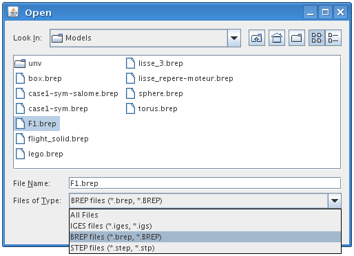
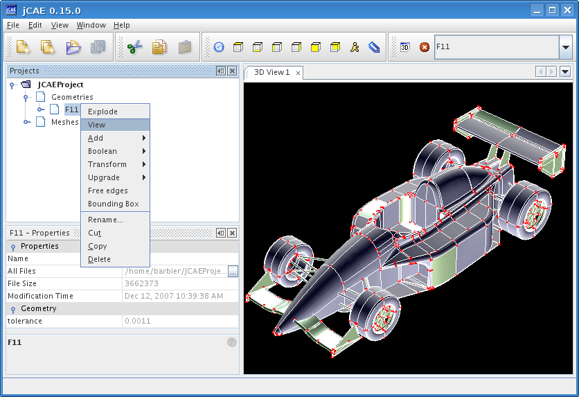
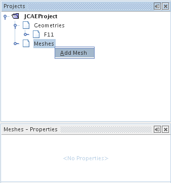
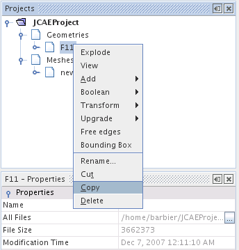
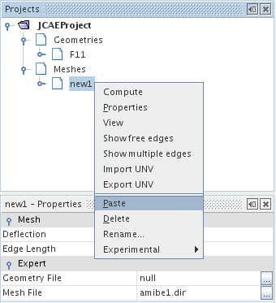
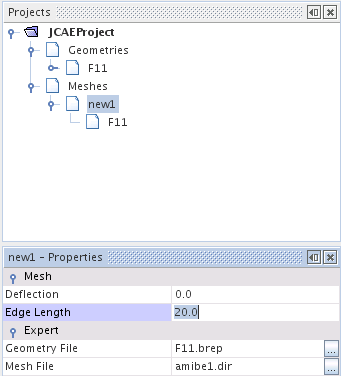
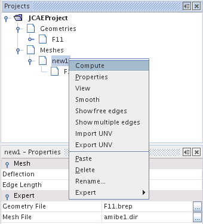
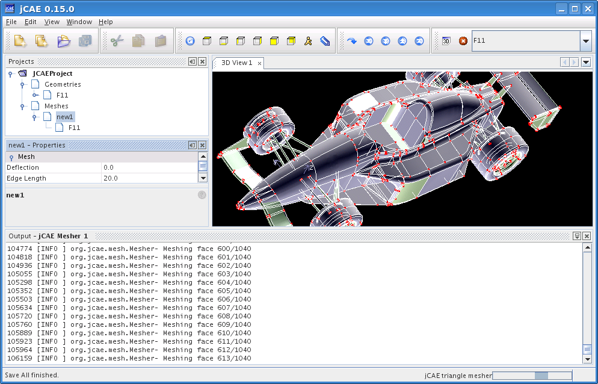
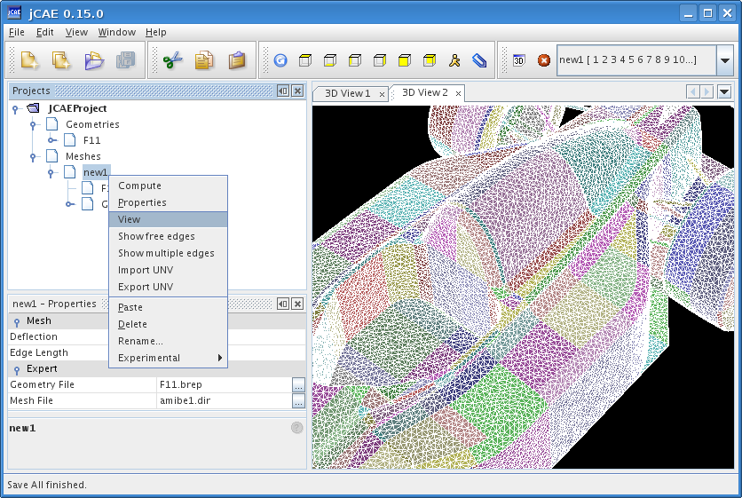

First, one has to import a CAD file in the CAD module by selecting Import geometry in File menu. 3 CAD formats are supported: native OpenCascade format (Brep) and standard IGES and STEP formats. Select a CAD file:
A new CAD object is created. To display this geometry, right click on it and click View.
This terminates the CAD operations. We now create a new mesh, then link the previously loaded geometry to the mesh object. This is done through the copy/paste operation presented hereafter (an alternative is to drag and drop geometry node into mesh node).
|  |  |  |
Then you may modify meshing parameters (edge length and deflexion) through the lower leftmost properties panel as shown below.
Once parameter values are set, you can compute mesh through the pop-up menu as shown below.
One can follow the mesh generation phase by displaying output window (from window menu)
Once mesh is generated, View operation (pop-up menu) can be selected to get its 3D representation.
